Знак
Рамка кадра, буква K и красная точка записи. Знак сразу говорит: этот человек работает с видео.
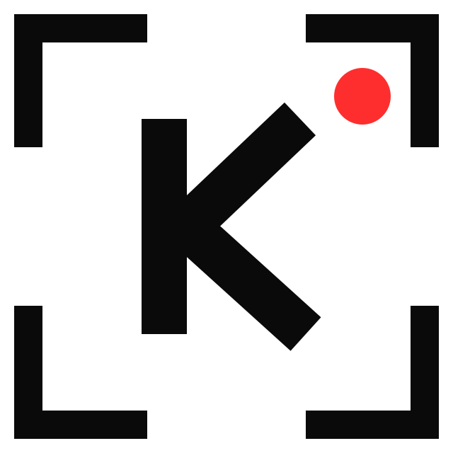
- На тёмном фоне белый знак, на светлом чёрный. Точка всегда красная.
- Вокруг знака пустое место не меньше четверти его ширины.
- В кадре шириной 1080 px знак не меньше 64 px.
- Знак и надпись вместе: для шапок, заставки, визитки. Один знак: для водяного знака и мелких мест.


Цвета
- Основа стиля: чёрный и белый, как на аватаре.
- Красный только круглой точкой: точка записи, точка в титре, точка в знаке. Красных букв, плашек и фонов нет.
- Углы прямые: у плашек, рамок и кнопок скругления нет.
Нажмите на код цвета, чтобы скопировать его. В CapCut код вставляется в поле цвета текста или фона.
Шрифты
Oswald. Заголовки, обложки, имена в титрах. Всегда заглавными буквами. Bold для заголовков, Medium для мелких надписей вроде «REC».
Golos Text. Подписи, субтитры, текст постов. Regular для текста, SemiBold для субтитров.
Как поставить
- Скачать архив. Шрифты лежат в папке «шрифты».
- На компьютере: открыть файл .ttf и нажать «Установить». CapCut покажет шрифт в списке после перезапуска.
- На телефоне: в CapCut открыть текст, раздел шрифтов, и добавить файл .ttf через загрузку своего шрифта.
Оба шрифта бесплатные, лицензия OFL: их можно ставить в ролики клиентам.
В роликах
Титр
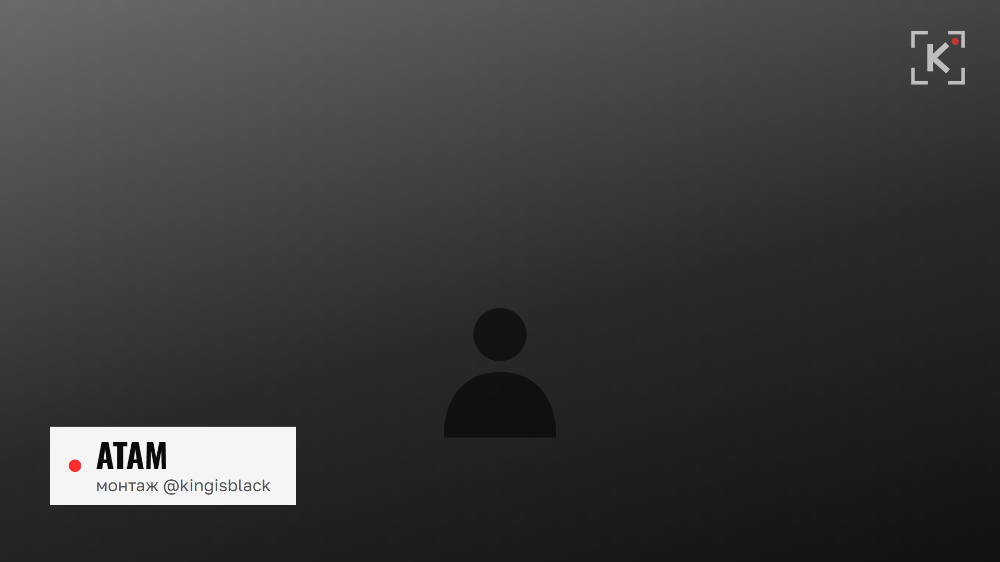
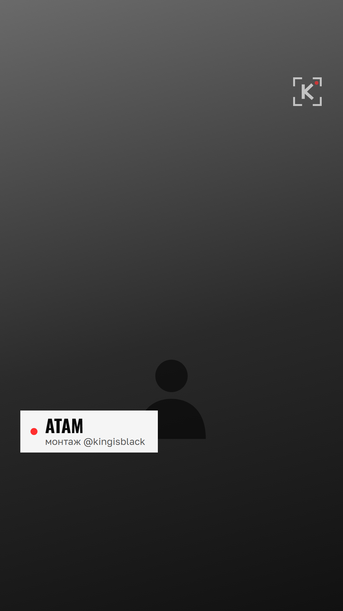
- Белая плашка, слева красная точка. Имя: Oswald Bold заглавными. Ниже подпись: Golos Text, серым.
- Не больше двух строк. Плашка в нижней левой части кадра.
- В вертикальном ролике плашка на высоте двух третей кадра: ниже её закроет подпись Instagram.


Водяной знак
- Белый знак (знак-белый.png) в правом верхнем углу.
- Ширина около 9% кадра: 96 px в кадре 1080 px. Прозрачность 70%.
- На светлом кадре чёрный знак.
Субтитры
- Golos Text SemiBold, белые, тонкая чёрная обводка.
- По центру, чуть ниже середины кадра: снизу их закрывают подпись и кнопки Instagram.
Заставка и концовка
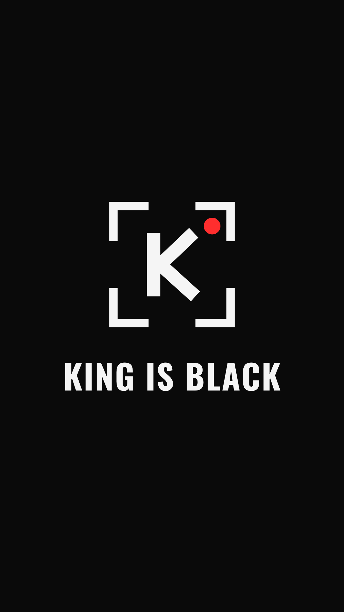
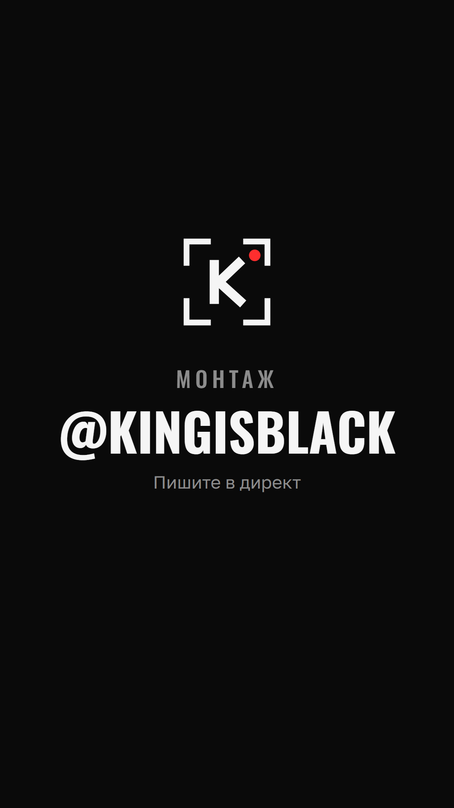
- Заставка: 1 секунда в начале своих роликов.
- Концовка: 2 секунды в конце. В ролик клиента только с его согласия.


Обложка рилса
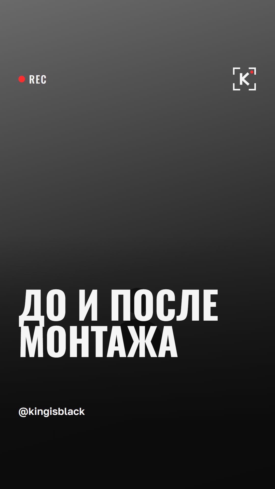
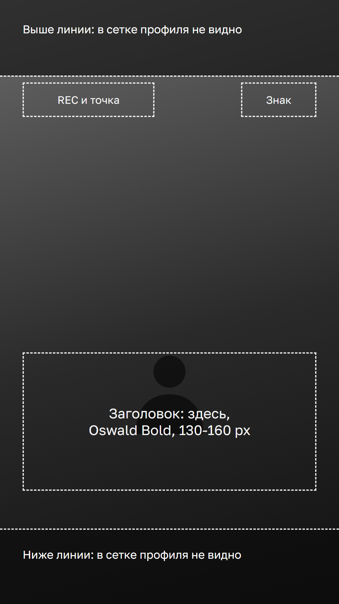
- Поставить кадр из ролика.
- Сверху положить слой «обложка-рилса-слой.png»: в нём затемнение, REC, знак и ник.
- Написать заголовок: Oswald Bold, заглавными, 2-3 строки, в зоне заголовка.
Сетка профиля показывает только середину обложки. Всё важное держать между линиями разметки.


Актуальное
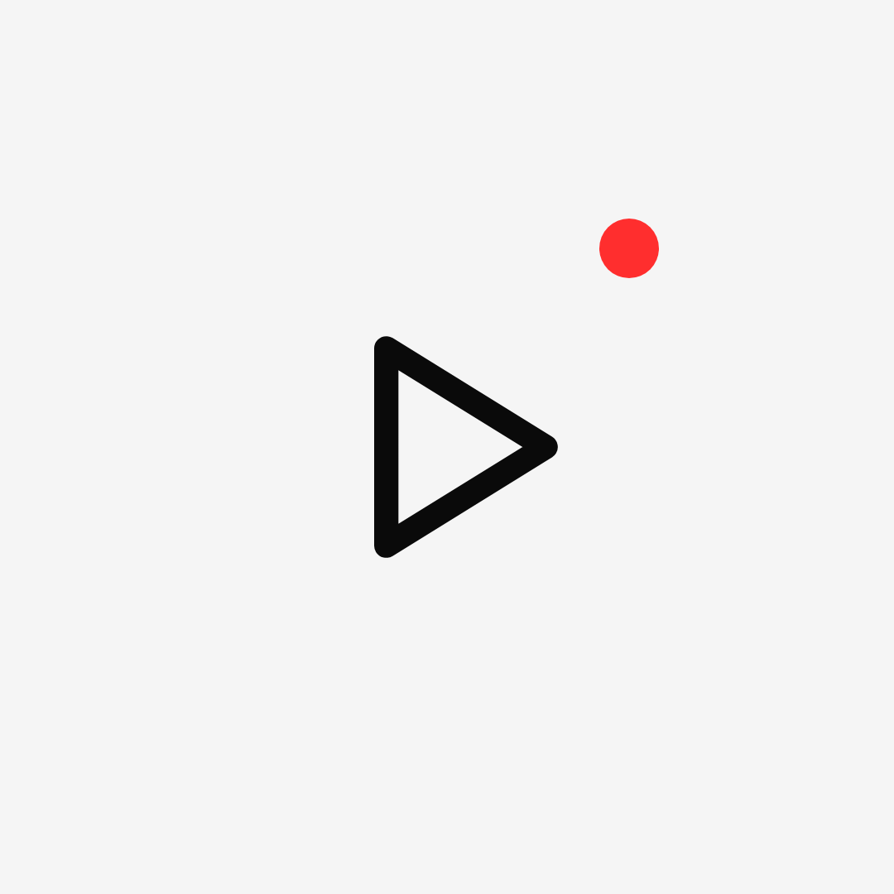
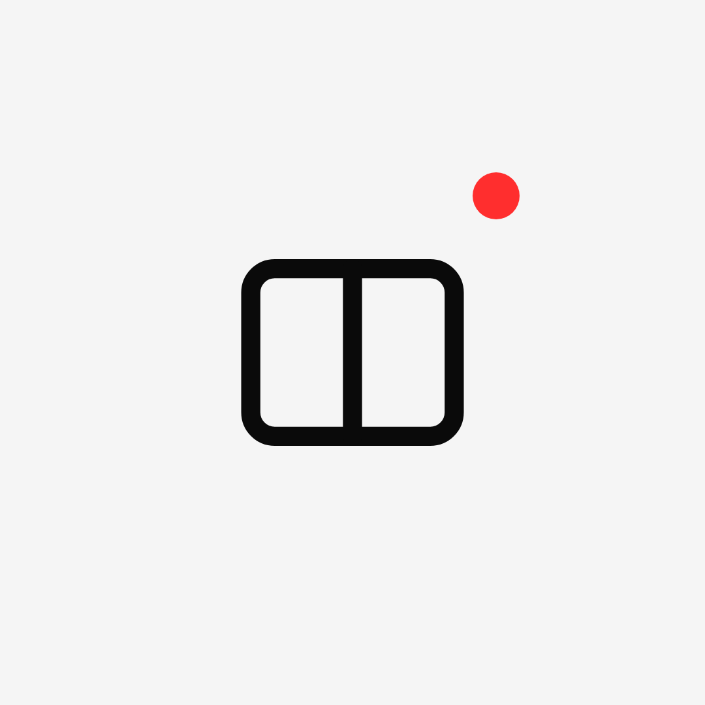
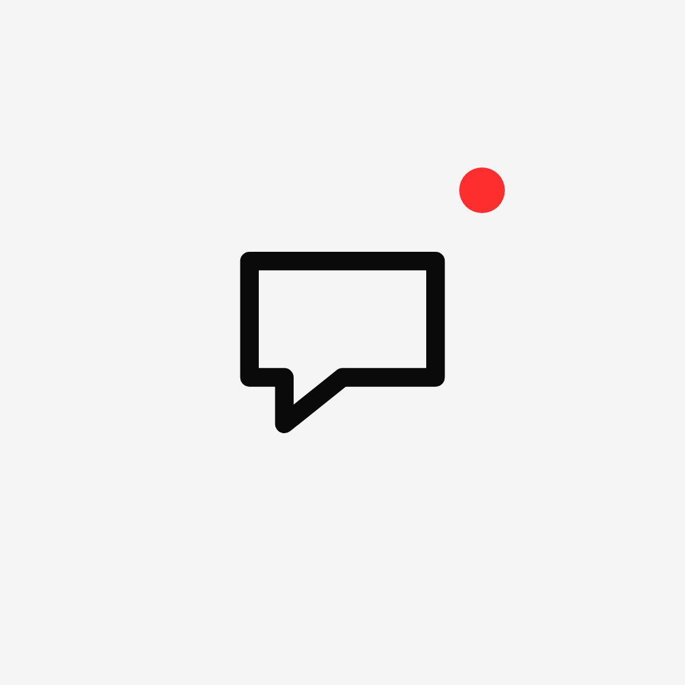
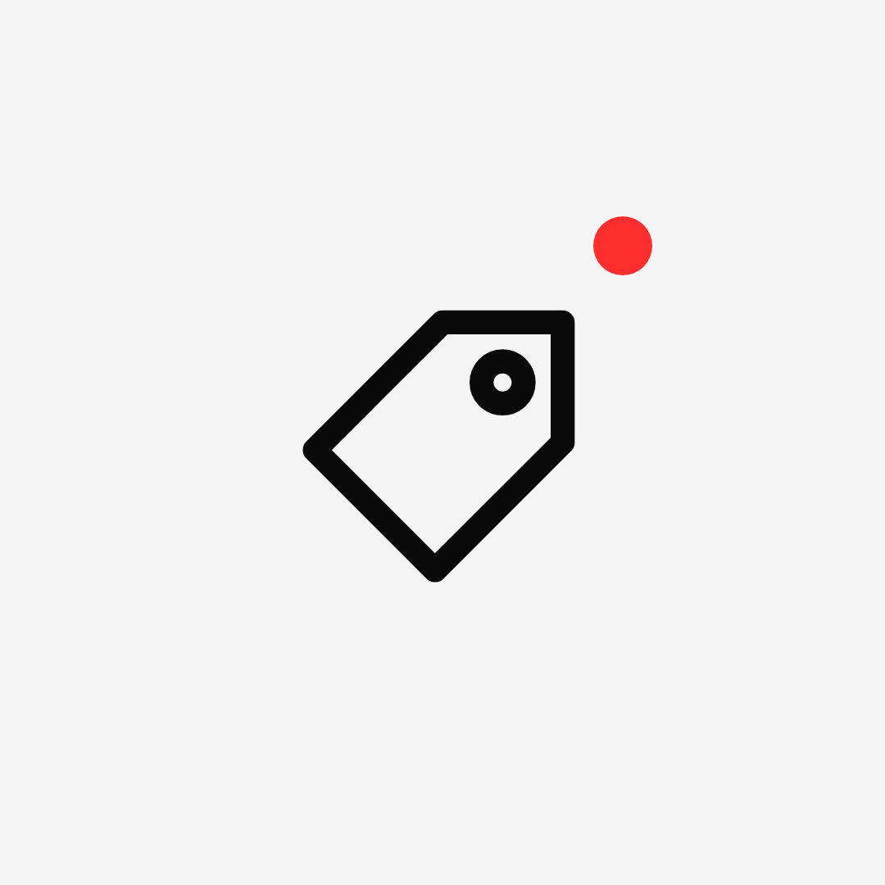
В Instagram: нажать на «Актуальное», «Редактировать», «Изменить обложку».
Аватар
Чёрно-белое фото лица, как сейчас: оно уже в стиле. Без фото: «знак-на-чёрном.png».
Шапка профиля
Имя в профиле. Слово «монтаж» в имени помогает найти профиль поиском.
Атам · монтаж роликов
Описание профиля
Монтаж роликов на заказ Работы в «Актуальном» Пишите в директ
Визитка и прайс
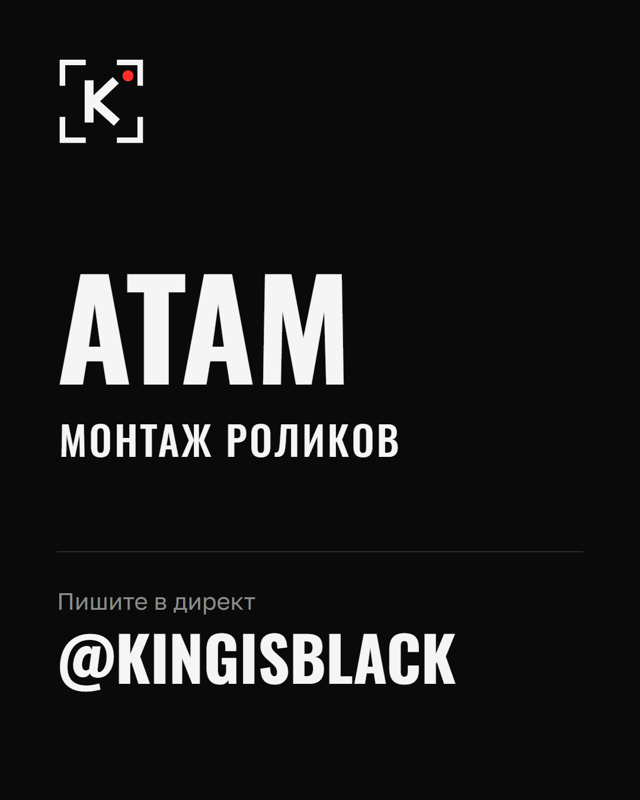
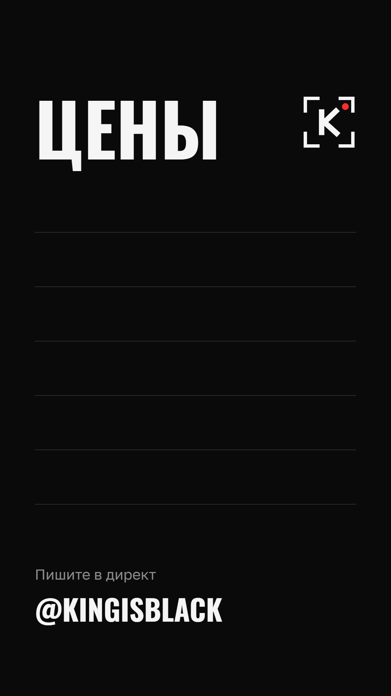
- Визитку закрепить первым постом и отправлять новым клиентам.
- Прайс: услуги и цены вписать в CapCut поверх фона. Услуга: Oswald Bold, цена: Golos Text. Одна услуга на строку.


Тон текстов
- Коротко и по делу. Одна мысль в предложении.
- С клиентами на «вы».
- Заголовок обложки: что увидит зритель, 2-5 слов.
- Цифры и сроки только настоящие.
- Без пустых слов: «качественно и в срок», «уникальный», «индивидуальный подход», «команда профессионалов».
Чего не делаем
- Не менять цвета знака, не растягивать и не поворачивать его.
- Не добавлять знаку тень, свечение и обводку.
- Не ставить знак на пёстрый кадр без тёмной подложки.
- Красный только точкой: без красных букв, плашек и фонов.
- Других шрифтов не брать. Курсив не ставить.
- Без градиента в буквах, неона и «стекла».
- Без скруглённых углов у плашек и кнопок.